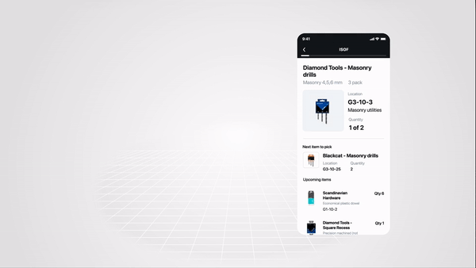
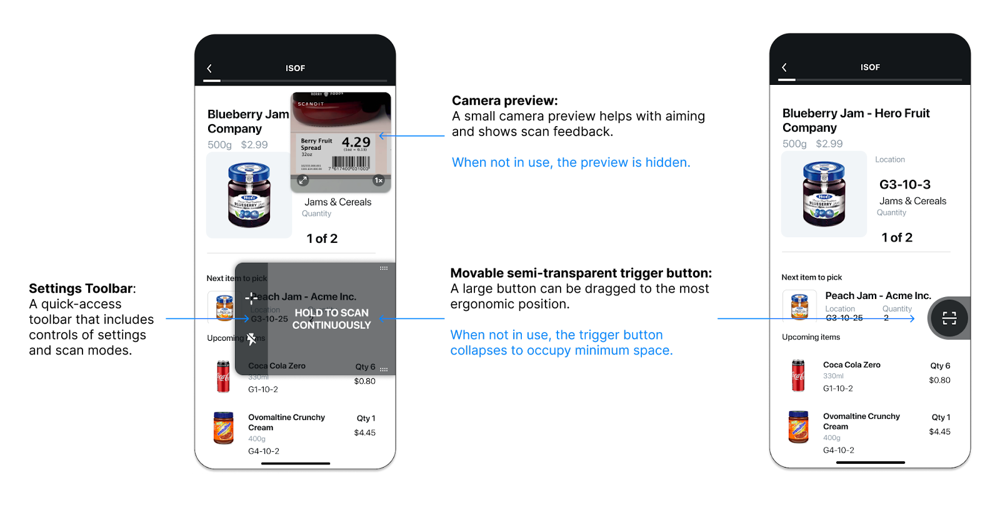
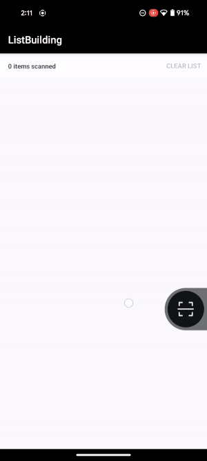
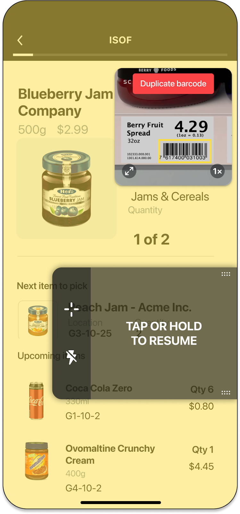
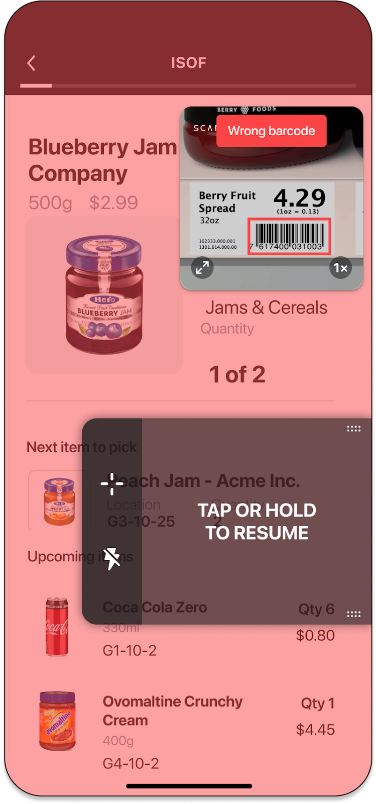
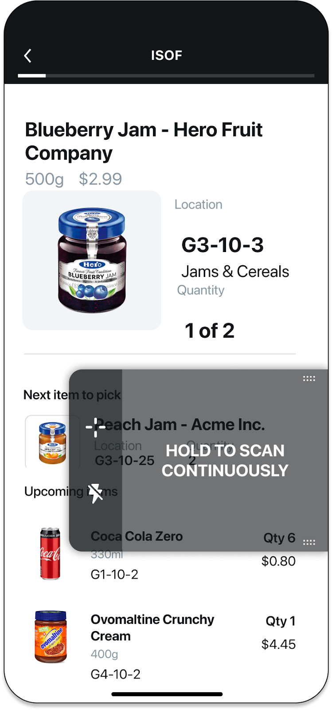
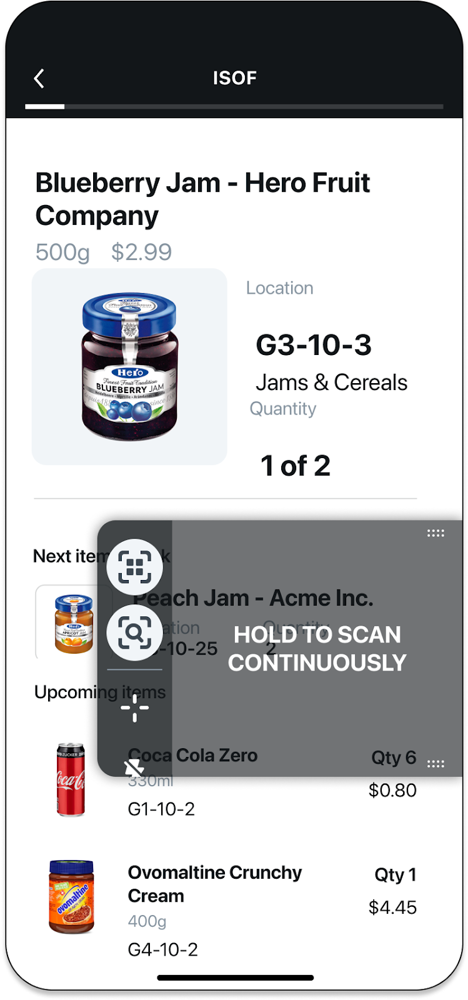

High-Speed Single Scanning
What is SparkScan?
For most people integrating scanning for the first time our pre-built component SparkScan is the best and quickest place to start. It includes a pre-built scanning interface that floats on top of any native application.
This bundles multiple scanning features together and addresses many common challenges associated with scanning on smart devices.
Run SparkScan Samples
There are simple and advanced SparkScan samples available on our Github repository.
A simple sample that demonstrates how to populate a list of scanned barcodes using the Scandit SparkScan API. |
An advanced sample that shows how to share scan data between MatrixScan Count and Spark Scan to populate an item list. |
An advanced sample that shows how to share scan data between MatrixScan Count and Spark Scan to show the expiration status of scanned items. |
SparkScan Quick Start Guide
Add the SDK to your App
Prerequisites
The latest stable version of the Android SDK (for example through the latest Android Studio).
An Android project with target SDK version 23 (Android 6, Marshmallow) or higher.
A valid Scandit Data Capture SDK license key. You can sign up for a free test account at ssl.scandit.com.
Note
Devices running the Scandit Data Capture SDK need to have a GPU or the performance will drastically decrease.
Add the SDK
Scandit Data Capture SDK is distributed as AAR libraries in the official Scandit maven repository.
You will always need to add a reference to com.scandit.datacapture:core, which contains the shared functionality used by the other data capture modules. If you’re using textcapture-related functionalities, make sure to also add a reference to com.scandit.datacapture:text-base. In addition, depending on the data capture task, you will need a reference to:
com.scandit.datacapture:barcode (ScanditBarcodeCapture API) if you want to use barcode-related functionality such as barcode capture or MatrixScan.
com.scandit.datacapture:parser (ScanditParser API) if you want to parse data strings, e.g. as found in barcodes, into a set of key-value mappings.
com.scandit.datacapture:text (ScanditTextCapture API) if you want to use text recognition (OCR) functionality, often combined with barcode scanning to deliver simultaneous barcode and text capture.
com.scandit.datacapture:id (ScanditIdCapture API) if you want to scan personal identification documents such as identity cards, passports or visas.
You can safely remove barcode, parser, text or id dependencies if you are not going to use their features.
Gradle
Add mavenCentral() repository in build.gradle file:
repositories {
mavenCentral()
}
Add the necessary artifacts as dependencies to the app’s build.gradle:
dependencies {
implementation "com.scandit.datacapture:core:[version]"
implementation "com.scandit.datacapture:barcode:[version]"
implementation "com.scandit.datacapture:parser:[version]"
implementation "com.scandit.datacapture:text-base:[version]"
implementation "com.scandit.datacapture:text:[version]"
implementation "com.scandit.datacapture:id:[version]"
}
Latest [version] is 6.24.0-rc.2 and can be found on Sonatype.
Note
Up to version 6.21.x the core module depends on okhttp version 4.9.2. If your project already implements a different version of okhttp (within the supported version range specified in the requirements page), make sure to exclude the group from the gradle implementation of the core module.
implementation("com.scandit.datacapture:core:[version]") {
exclude group: "com.squareup.okhttp3"
}
Maven
Add the mavenCentral repository in pom.xml file:
<repositories>
<repository>
<snapshots>
<enabled>false</enabled>
</snapshots>
<id>central</id>
<name>Maven Central</name>
<url>https://repo1.maven.org/maven2</url>
</repository>
</repositories>
Add the necessary artifacts as dependencies:
<dependency>
<groupId>com.scandit.datacapture</groupId>
<artifactId>core</artifactId>
<version>[version]</version>
</dependency>
<dependency>
<groupId>com.scandit.datacapture</groupId>
<artifactId>barcode</artifactId>
<version>[version]</version>
</dependency>
<dependency>
<groupId>com.scandit.datacapture</groupId>
<artifactId>parser</artifactId>
<version>[version]</version>
</dependency>
<dependency>
<groupId>com.scandit.datacapture</groupId>
<artifactId>text-base</artifactId>
<version>[version]</version>
</dependency>
<dependency>
<groupId>com.scandit.datacapture</groupId>
<artifactId>text</artifactId>
<version>[version]</version>
</dependency>
<dependency>
<groupId>com.scandit.datacapture</groupId>
<artifactId>id</artifactId>
<version>[version]</version>
</dependency>
Get a License Key
If you have a paid subscription, please reach out to support@scandit.com if you need a new license key.
Additional Information
Note
If you’re using androidx.fragments dependency and have the situation where a scanning fragment navigates to another scanning fragment with an incompatible mode, make sure you’re using version 1.3.0+ of the dependency. If not, you may run into an incompatible modes error, as the new fragment gets resumed before the previous is paused and for some time incompatible modes may be enabled in the DataCaptureContext at the same time. This results in sessions being empty of any result.
Note
On Android, the Scandit SDK uses content providers to initialize the scanning capabilities properly. If your own content providers depend on the Scandit SDK, choose an initOrder lower than 10 to make sure the SDK is ready first.
If not specified, initOrder is zero by default and you have nothing to worry about.
Get Started With SparkScan
In this guide you will learn step by step how to add SparkScan to your application.
Roughly, the steps are:
Create a new Data Capture Context instance.
Configure the Spark Scan Mode.
Create the SparkScanView with the desired settings and bind it to the application’s lifecycle.
Register the listener to be informed when new barcodes are scanned and update your data whenever this event occurs.
Note
If you’re looking to integrate SparkScan into a Compose view hierarchy, there are additional steps you need to follow:
Create an AndroidView to wrap the SparkScanView instance, initialized as described in the rest of this section.
Monitor the view lifecycle so you can call the view lifecycle methods in SparkScanView when necessary. This can be done using a combination of DisposableEffect and the onRelease callback of AndroidView.
1. Create a New Data Capture Context Instance
The first step to add capture capabilities to your application is to create a new Data Capture Context. The context expects a valid Scandit Data Capture SDK license key during construction.
DataCaptureContext dataCaptureContext = DataCaptureContext.forLicenseKey("-- ENTER YOUR SCANDIT LICENSE KEY HERE --");
2. Configure the SparkScan Mode
The SparkScan Mode is configured through SparkScanSettings and allows you to register one or more listeners that are informed whenever a new barcode is scanned.
For this tutorial, we will set up SparkScan for scanning EAN13 codes. Change this to the correct symbologies for your use case (for example, Code 128, Code 39…).
SparkScanSettings settings = new SparkScanSettings();
HashSet<Symbology> symbologies = new HashSet<>();
symbologies.add(Symbology.EAN13_UPCA);
settings.enableSymbologies(symbologies);
Next, create a SparkScan instance with the settings initialized in the previous step:
SparkScan sparkScan = new SparkScan(settings);
3. Setup the Spark Scan View
The SparkScan built-in user interface includes the camera preview and scanning UI elements. These guide the user through the scanning process.
The SparkScanView appearance can be customized through SparkScanViewSettings.
SparkScanViewSettings viewSettings = new SparkScanViewSettings();
// setup the desired appearance settings by updating the fields in the object above
By adding a SparkScanView, the scanning interface (camera preview and scanning UI elements) will be added automatically to your application.
Add a SparkScanView to your view hierarchy:
Construct a new SparkScan view. The SparkScan view is automatically added to the provided parentView (preferably an instance of SparkScanCoordinatorLayout):
SparkScanView sparkScanView = SparkScanView.newInstance(parentView, dataCaptureContext, sparkScan, viewSettings);
Additionally, make sure to call sparkScanView.onPause() and sparkScanView.onResume() in your Fragment/Activity onPause and onResume callbacks. You have to call these for the correct functioning of the SparkScanView.
@Override
protected void onPause() {
sparkScanView.onPause();
super.onPause();
}
@Override
protected void onResume() {
sparkScanView.onResume();
super.onResume();
}
4. Register the Listener to Be Informed When a New Barcode Is Scanned
To keep track of the barcodes that have been scanned, implement the SparkScanListener interface and register the listener to the SparkScan mode.
// Register self as a listener to monitor the spark scan session.
sparkScan.addListener(this);
SparkScanListener.onBarcodeScanned() is called when a new barcode has been scanned. This result can be retrieved from the first object in the provided barcodes list: SparkScanSession.newlyRecognizedBarcodes. Please note that this list only contains one barcode entry.
@Override
public void onBarcodeScanned(
@NonNull SparkScan sparkScan, @NonNull SparkScanSession session, @Nullable FrameData data
) {
// Gather the recognized barcode
Barcode barcode = session.getNewlyRecognizedBarcodes().get(0);
// This method is invoked from a recognition internal thread.
// Run the specified action in the UI thread to update the internal barcode list.
runOnUiThread(() -> {
// Update the internal list and the UI with the barcode retrieved above
this.latestBarcode = barcode
});
}
5. Scan Some Barcodes
Now that you’re up and running, go find some barcodes to scan. Don’t feel like getting up from your desk? Here’s a handy pdf of barcodes you can print out.
Learn More About SparkScan
UI overview
The SparkScan UI is minimal, meant to be overlayed on top of any application without the need to adapt the existing app, while offering the best user experience.
Three main elements compose the UI:
NOTE: Additional UI elements are available for developers to use if their app logic requires displaying errors or additional feedback while scanning. More information in Customisation and advanced capabilities.
Workflow Options
The workflow here is based on the default configuration of SparkScan, carefully picked as a result of extensive user testing and customer feedback from the field.
But not all workflows look the same, and your needs may differ. That’s why SparkScan comes with a set of options to configure the scanner and to best fit in the desired workflow.
Scanning modes:
Default mode: Ideal for close-range and fast paced scanning. This mode will display a small camera preview to aid with aiming. The preview size and zoom level can be adjusted as needed.
Target mode: Ideal for scanning scenarios where precision is important. This mode will add an aimer to the preview, to precisely select the barcode to scan. This is useful when multiple barcodes are in view (e.g. long range scanning).
Users can enable the target mode by toggling the dedicated icon in the setting toolbar, shown by default (SparkScanView.targetModeButtonVisible). Hiding this button will remove the possibility to toggle scanning mode for the end-user.
Scanning behaviors:
Single scan: Scan one barcode at a time. The user needs to trigger the scanner every time to scan a barcode. This allows for a more controlled scanning and lower battery consumption.
Continuous scan: Scan barcodes consecutively. The user needs to trigger the scanner once and barcodes will be scanned without any further interaction before each scan. This allows for a smoother experience when multiple barcodes need to be scanned consecutively.
Users can enable continuous scanning by holding down the trigger button (SparkScanViewSettings.holdToScanEnabled). This gesture can be disabled.
Developers can show a dedicated setting in the toolbar to let the user enable continuous scan mode (SparkScanView.scanningBehaviorButtonVisible), which is hidden by default.
Camera preview behaviors:
Default: Preview fades aways when the scanner is off. This lets the user check important information displayed by the app and reduces battery consumption.
Persistent: Preview remains visible, but darkened, even when the scanner is off. This is useful for scenarios where you want to select a barcode (among many) or need to look through the preview at all times (to ensure the right scan) - especially if used in conjunction with the target mode.
Developers can set a combination of scanning mode, scanning behavior and camera preview behavior - defining the initial state of the scanner. This can be done by setting the default scanning mode (SparkScanViewSettings.defaultScanningMode).
Workflow Description
When SparkScan is started, the UI presents just the trigger button, collapsed on the side.
To start scanning, the user can:
swipe to open the button, then tap on it.
tap on the collapsed trigger button.
When the scanner is active the mini preview is shown.
Depending on the scanning mode enabled, the workflow will behave differently:
Upon scan the user will receive audio/haptic feedback confirming the scan, and the mini preview will display the scanned barcode for a small amount of time before fading away.
Tapping on the trigger button will restart immediately the scanner.
Upon completing the scanning process (or to interact with the customer app layer), the user can tap in any area outside the trigger button and the mini preview. This collapses the scanner button back to the side, going back to the initial state.
|  |
Workflow example. |
Supported Devices
Runs on iOS and Android devices.
Supported Symbologies
SparkScan supports all of the major symbologies listed here: Barcode Symbologies except DotCode, MaxiCode, ArUco, and postal codes (KIX, RM4SCC, LAPA 4SC, USPS Intelligent Mail, etc.).
If you are not familiar with the symbologies that are relevant for your use case, you can use capture presets that are tailored for different verticals (e.g. retail, logistics, etc.).
For more symbology specific information, please refer to this link.
Customisation and advanced capabilities
SparkScan offers an out-of-the-box experience optimized for efficiency and a frictionless worker experience. This experience has been crafted after many user testing and with the product knowledge gained in the many years of Scandit.
While this out-of-the-box experience will suit most use-cases, we understand there are some special cases in which some configuration is still needed.
In this page, we collect the main customization and advanced settings you may need to customize SparkScan to obtain the best experience possible.
Advanced capabilities
Allowing the end user to control the scanner with hardware buttons can be useful if your users typically wear gloves. It can also improve ergonomics in some workflows.
SparkScan offers a built-in API to let you do this via SparkScanViewSettings.hardwareTriggerEnabled.
You may want to introduce logic in your app to show an error message when scanning specific barcodes (e.g. barcodes already added to the list, barcodes from the wrong lot etc.). SparkScan offers a built-in error state you can easily set to trigger an error feedback prompt to the user. You will be able to customize:
The text message
The timeout of the error message: the scanner will be paused for the specified amount of time, but the user can quickly restart the scanning process by tapping the trigger button
The color of the flashing screen upon scan. You can enable or disable the visual feedback via SparkScanViewSettings.visualFeedbackEnabled and you can control the color via SparkScanViewFeedback.
The color of the highlight for the scanned barcode.
The feedback (sound, vibration).
To emit an error, you have to implement a SparkScanFeedbackDelegate and set it to the SparkScanView:
sparkScanView.setFeedbackDelegate(this);
In the SparkScanFeedbackDelegate.getFeedbackForBarcode() you can then return an error or a success feedback:
@Nullable
@Override
public SparkScanBarcodeFeedback getFeedbackForBarcode(@NonNull Barcode barcode) {
if (isValidBarcode(barcode)) {
return new SparkScanBarcodeFeedback.Success();
} else {
return new SparkScanBarcodeFeedback.Error("This code should not have been scanned", TimeInterval.seconds(60f));
}
}
NOTE: You can have different error states triggered by different logic conditions. For example you can trigger an error state when a wrong barcode is scanned, and another one when a duplicate barcode is scanned. These errors can show different colors and have different timeouts.
|  |  |
NOTE: A high timeout (e.g. >10s) typically requires the users to interact with the UI to start scanning again. This is a good choice when you want to interrupt the scanning workflow (e.g. because a wrong barcode is scanned and some actions need to be performed). A small timeout (e.g. <2s) could allow the user to scan again without having to interact with the app, just momentarily pausing the workflow to acknowledge that a “special” barcode has been scanned. If timeout is set to 0 workflow is not paused at all.
To prevent scanning unwanted barcodes (like those already listed or from incorrect lots), use SparkScan’s built-in error state. Setting the Error.resumeCapturingDelay parameter to 0 allows the user to continue scanning immediately without pausing on rejected codes.
SparkScan is our best solution for high-speed single scanning and scan-intensive workflows. Depending on your use case, you can use SparkScan scan in conjunction with other Scandit advanced scanning modes, such as MatrixScan Find or MatrixScan Count, to speed up your workflows.
SparkScan offers pre-build buttons you can add to the setting toolbar to easily move to different scan modes from within the SparkScan UI.
First you will need to show these buttons:
// Show the MatrixScan Count and MatrixScan Find buttons
sparkScanView.setBarcodeCountButtonVisible(true);
sparkScanView.setFastFindButtonVisible(true);
|  |  |
Standard toolbar. |
Toolbar with advanced modes icons shown. |
In addition you have to add a listener to the SparkScanView via SparkScanView.setListener(). After that you will receive callbacks when MatrixScan Find button or MatrixScan Count button is tapped from the toolbar.
sparkScanView.setListener(this);
//...
@Override
public void onFastFindButtonTap(
@NonNull SparkScanView view
) {
}
@Override
public void onBarcodeCountButtonTap(
@NonNull SparkScanView view
) {
}
Customization
All texts (guidance inside the trigger button and hints’ messages), colors and opacity of the SparkScan UI elements (trigger button, setting toolbar, toasts) can be customized to match the desired language and color scheme.
Please refer to SparkScanView for the full list of available parameters.
The Setting Toolbar comes with default buttons included, but the full list of available controls includes:
Target Mode (visible by default)
Continuous Mode
Torch Control (visible by default)
Audio Feedback Control
Haptics Control
Left-handed Mode
In some cases you want to avoid end users from accessing these controls, for example:
to prevent them disabling audio feedback on scan, as the work environment is always noisy
to prevent them toggling the continuous mode, as you want them to pick items one by one
etc.
To add controls to the settings toolbar, just change the visibility of these buttons. Please refer to SparkScanView for the full list of parameters.